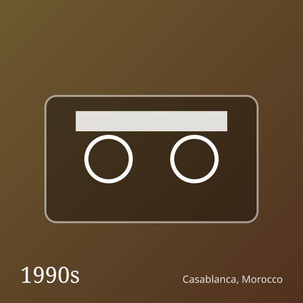

Gnawa master meets a drummer who will not stop
A Gnawa master's cassette where a studio drummer refuses to stay in the background.

- who
- Maâlem Mahmoud Gania with an unknown drummer
- what
- Voix de Casablanca VDC 53 / VDC 51 cassettes
- when
- 1990s
- where
- Casablanca, Morocco
Maâlem Mahmoud Gania of Essaouira was the best-known Gnawa musician of his time. On a pair of Voix de Casablanca cassettes (VDC 53 and VDC 51), his guimbri and the clattering qraqeb are joined by an anonymous trap drummer who rolls, crashes and punctuates without a break.
The Moroccan Tape Stash blog called it one of the wildest tapes in its collection. The j-card names only "The Gnawi Mahmoud Guinia". Nobody knows who the drummer was.